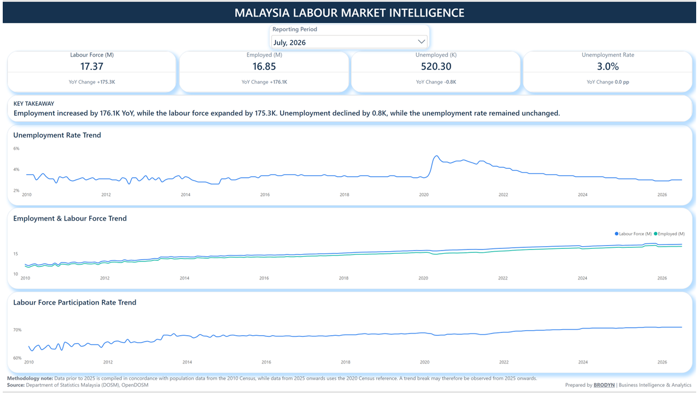

Published dashboard · Public-data portfolioOpenDOSM · Power BI · Public data
Malaysia Labour Market Intelligence
Employment trends and an unemployment deep dive, brought together in an interactive report.
View case studyBusiness Intelligence & Digital Solutions
BRODYN helps businesses organise data, streamline operations and build practical digital solutions — connecting reporting, workflows and websites around the way you work.
Independently operated by Hafizz in Malaysia. Practical implementation, with scope shaped around your business needs.
Selected work
Public data, sample data, business operations and internal systems. Each project states its scope and current stage.

Employment trends and an unemployment deep dive, brought together in an interactive report.
View case studyA portfolio project exploring sales, profit and margin across products, markets and business segments.
Question. Which segments contribute to sales and profit, and where do margins weaken?
Planned analysis. Monthly sales and profit trends, segment performance, product comparisons and discount analysis.
Data. Microsoft's Financial Sample dataset. This is a learning and demonstration project, not a real company's financial results.
Status. In development. The final dashboard and findings will be added when complete.
Reporting for a detergent vending business, connecting business performance with collection and refill activity.
Question. How can an owner monitor business performance and recurring vending operations in one place?
Scope. Executive reporting, sales by segment or region, and operational views of visits, refills and revenue by location and time.
Purpose. Support regular performance reviews and make operational records easier to interpret.
Privacy. Private business financial data and dashboards are not published on this website. No revenue improvement or cost saving is claimed.
An ongoing research portfolio project developing a reproducible workflow for Malaysian labour market data.
Current work. Downloading and processing monthly labour force data with Python, checking data consistency and preparing year-on-year indicators.
Approach. Separate raw and processed data, maintain scripts with Git, and document work in GitHub.
Next steps. Extend the analysis and research scope. Findings and a completed vulnerability framework are not yet published.
An internal project connecting structured business records with repeatable workflows.
Built so far. A client database using SharePoint Lists, with automated client reference ID generation through Power Automate.
Planned expansion. Project tracking and connected business workflows. These modules are not yet operational.
Privacy. Internal records and client information are not published.
Services
Start with a specific business problem. Connect the right data, reporting and digital tools around it.
Make performance easier to understand, from clean source data to dashboards and recurring management reports.
Connect everyday information and reduce repetitive administrative steps.
Develop focused tracking solutions around your records, people and processes.
Build a clear, professional place for people to understand your business and make contact.
Organise evidence and communicate findings to support operational and management decisions.
Custom solutions are scoped around business needs, technical feasibility and the licences required. Power Apps capability is developing; proposed features are confirmed before implementation.
Skills & technologies
Established reporting experience, supported by growing capabilities in automation and development.
A practical toolkit for collecting, preparing and interpreting data.
Structured records and workflows that support recurring operations.
Website delivery and foundational coding skills developed through project work.
Operational experience that connects technical work to practical questions.
The person behind Brodyn
I'm Hafizz, the person behind Brodyn. My background spans research, Learning & Development, employment services, compliance and programme monitoring.
My work connects data collection, preparation and analysis with operational dashboards and monthly reporting. Alongside performance monitoring, programme and project coordination, and stakeholder engagement, this has shaped a practical understanding of how data supports day-to-day operations.
Through Brodyn, I apply that experience to practical reporting and digital solutions, using Excel, Power BI and Microsoft 365 while developing my capabilities in automation, Python, SQL and web development.
Continuing professional development
Selected courses and learning paths completed by Hafizz, supporting ongoing development across data, research and project work.
LinkedIn Learning · March 2025
Completion reviewed · certificate publication pendingLinkedIn Learning · December 2025
Completion reviewed · certificate publication pendingLinkedIn Learning · March 2026
Completion reviewed · certificate publication pendingLinkedIn Learning · November 2025
Completion reviewed · certificate publication pendingLinkedIn Learning · April 2026
Completion reviewed · certificate publication pendingLinkedIn Learning · March 2026
Completion reviewed · certificate publication pendingLinkedIn Learning · December 2025
Completion reviewed · certificate publication pendingThese are course and learning-path completion credentials. Exam-preparation courses do not confer Microsoft PL-300 or MOS Excel Expert certification. Project management training does not confer PMP certification.
Start a conversation
Tell me about the process you want to improve, the reporting you need or the website you have in mind. We can define a practical scope and next step.